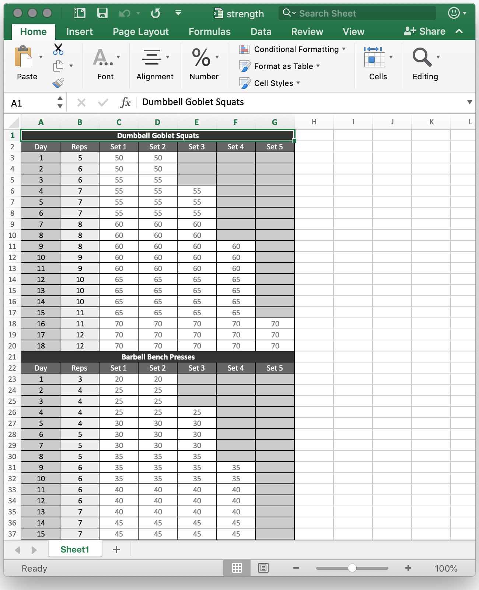
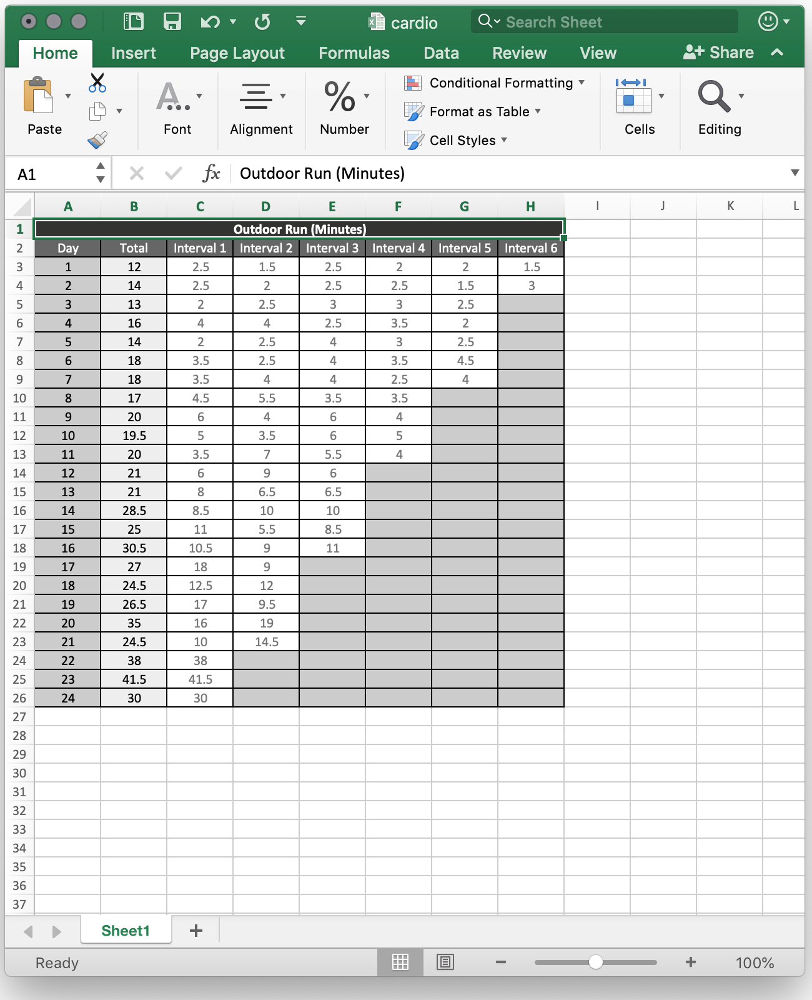
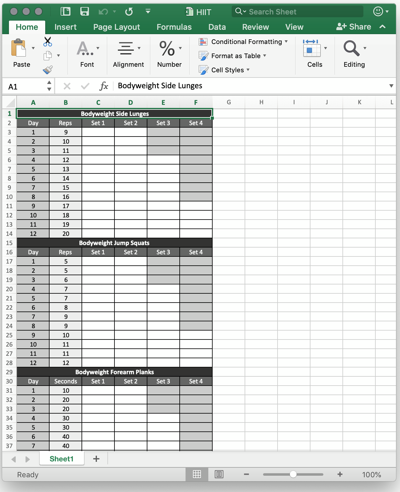

Generate strength, cardio, and HIIT exercise routines using parametric curves. Routines are saved as Excel spreadsheets. A command-line tool written in Python.
Routinemaker is a Python 3 package and can be installed through pip.
$ pip install routinemaker
Run Routinemaker from the command line. The command does not take any options. You will be prompted as the generator walks through all the options.
$ routinemaker
Routinemaker generates formatted Excel spreadsheets. You can either print out the spreadsheets or upload them to the cloud (ie: Google Drive) to make them easier to use during workouts. Below are screenshots, downloadable files, and a brief usage guide for sample routines.
Usage: On Day 1, do 2 sets of 5 reps of dumbbell goblet squats with 50 pounds of weight, then do 2 sets of 3 reps of barbell bench presses with 20 pounds of weight. Mark an "X" in the corresponding white box as you finish each set.
Usage: On Day 1, run for 2.5 minutes, then rest by walking. Next, run for 1.5 minutes, then rest by walking. Finish all 6 intervals and mark an "X" in the corresponding white box as you progress.
Usage: On Day 1, do 2 sets of 9 reps of bodyweight side lunges for each side, then do 2 sets of 5 reps of bodyweight jump squats, then do 2 sets of 10-second bodyweight forearm planks. Mark an "X" in the corresponding white box as you finish each set.
Routinemake is meant to be customized to your preferences. In particular, you may want to modify the list of exercises or tweak the equations for the curves used to generate the workouts.
You can customize the list of exercises that Routinemaker uses to generate workouts. The exercises are stored in data/exercises.json. Each exercise in the json file includes settings for type (ie: strength), muscle group (ie: chest), variations (ie: by equipment), unit of measurement (ie: reps or seconds), minimum units, maximum units, and the step for incrementing the units.
You can also customize the curves that Routinemaker uses to generate workouts. The calculation logic is stored in routine.py. Routinemaker comes with 3 default curves: linear (constant increase in difficulty), exponential (starts off easy and escalates in difficulty towards the end), and logarithmic (ramps up quickly).
Routinemaker works by prompting for a variety of settings and then feeding the parameters into curves in order to generate workouts for each day. Below are a few sample screenshots of the workflow and a summary of all the prompts and options.
├── What type of routine do you want to create? │ ├── STRENGTH │ │ ├── What type of equipment do you have access to? │ │ └── How would you like to choose the exercises for your routine? │ │ ├── START WITH A RANDOM LIST OF EXERCISES │ │ │ ├── Which muscle groups do you want to train? │ │ │ └── How many exercises do you want in your routine? │ │ └── MANUALLY ADD EXERCISES [∞] │ │ ├── Pick a muscle group to browse exercises to add │ │ └── Which exercise would you like to add? │ ├── CARDIO │ │ └── Which cardio activity would you like to do? │ │ └── Which specific exercise would you like to work on? │ └── HIIT │ └── How would you like to choose the exercises for your routine? │ ├── START WITH A RANDOM LIST OF EXERCISES │ │ ├── Which muscle groups do you want to train? │ │ └── How many exercises do you want in your routine? │ └── MANUALLY ADD EXERCISES [∞] │ ├── Pick a muscle group to browse exercises to add │ └── Which exercise would you like to add? ├── Do you need to edit or reorder the exercises in your routine? [∞] │ ├── YES │ │ └── What would you like to do? │ │ ├── ADD EXERCISE │ │ │ ├── Pick a muscle group to browse exercises to add │ │ │ └── Which exercise would you like to add? │ │ ├── REMOVE EXERCISE │ │ │ └── Which exercise would you like to remove? │ │ ├── SWAP EXERCISE │ │ │ ├── Which exercise would you like to swap? │ │ │ ├── [STRENGTH/HIIT] │ │ │ │ ├── Pick a muscle group to browse exercises to add │ │ │ │ └── Which exercise would you like to add? │ │ │ └── [CARDIO] │ │ │ └── Which exercise would you like to add? │ │ └── REORDER EXERCISE │ │ ├── Which exercise would you like to move? │ │ └── Which exercise would you like to move it before? │ └── NO ├── How many weeks would you like your routine to last? ├── How many days per week are you planning on exercising? ├── [FOR EACH EXERCISE] │ ├── Which variation of EXERCISE do you plan on doing? │ ├── How many continuous UNITS of ACTIVITY are you currently comfortable with? │ ├── How many continuous UNITS of ACTIVITY is your goal? │ └── [STRENGTH] │ ├── What weight are you currently using for ACTIVITY? │ └── What's your goal weight for ACTIVITY? ├── [STRENGTH/HIIT] │ ├── What's the mininum number of sets you'd like to do for each exercise? │ └── What's the maximum number of sets you'd like to do for each exercise? ├── [CARDIO] │ ├── What's the maximum number of intervals you want in your routine? │ └── Please choose a random number to seed the routine ├── What type of curve do you want to use to create your routine? │ ├── LINEAR │ ├── EXPONENTIAL │ └── LOGARITHMIC └── What do you want to name the output file?
Routinemaker is an automated engine that generates workout routines independent of your physical ability. Generated workouts may not be suitable for your level of fitness. Please use common sense. You should see your healthcare provider before starting a new exercise program.
Routinemaker was created and open-sourced under the MIT License by Kathy Qian.